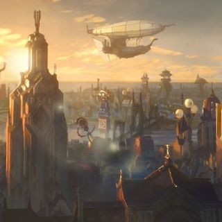
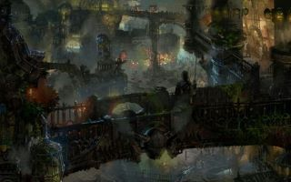
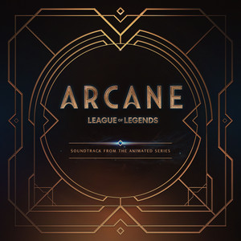

What is Arcane?
Arcane (titled onscreen as Arcane: League of Legends) is an animated steampunk action-adventure television series created by Christian Linke and Alex Yee. It was produced by the French animation studio Fortiche under the supervision of Riot Games, and distributed by Netflix. Set in Riot's League of Legends universe, it primarily focuses on sisters Vi and Jinx. The series was announced at the League of Legends 10th anniversary celebration in 2019, and first released in November 2021. Following the conclusion of the first season, Riot Games and Netflix announced that a second season was in production, to be released in November 2024.
Arcane's first season was released to acclaim, with praise directed at its animation, story, worldbuilding, action sequences, characters, emotional weight, music, and voice acting. Some have noted the series' appeal both to casual viewers who have never played League of Legends and to long-time fans of the game.It also set the record as Netflix's highest-rated series at the time within a week of its premiere, ranked first on the Netflix Top 10 Chart in 52 countries, and ranked second on the chart in the United States. Several critics and publications considered it one of the best video game adaptations ever made.In 2022, the series became the first streaming series to win a Primetime Emmy Award for Outstanding Animated Program and won an Annie Award for Best General Audience Animated Television Broadcast Production.
Premise
Amidst the escalating unrest between the rich, utopian city of Piltover and its seedy, oppressed underbelly of Zaun, sisters Vi and Jinx find themselves on opposing sides of a brewing conflict over clashing convictions and arcane technologies.

Piltover
Piltover is a renowned progressive city, dubbed the City of Progress for its innovations and Academy.The city became particularly famous for its Hexgates, the scientific utilization of what was dubbed Hextech by its Piltovan pioneer, which revolutionized travel and trade for the rest of the world, for which they have since become the global shipping lane. The city is governed by the Council, made up of members of some of the most influential Houses or individuals of Piltover.

Zaun
Zaun, also known as the City of Iron and Glass, is a large undercity district lying in the deep canyons and valleys threading Piltover. What light reaches below is filtered through fumes leaking from the tangles of corroded pipework and reflected from the stained glass of its industrial architecture. Despite the connection and proximity, Zaun and its residents are viewed by those in Piltover with contempt and prejudice.

Soundtrack
Arcane is often praised for it's amazing soundtrack. On November 20, 2021, songs from the first season were released on Amazon Music and it's also available on Spotify and on YouTube. You can click on the album cover to listen to the songs.
- Playground - Bea Miller
- Our Love - Curtis Hardig, Jazmine Sullivan
- Goodbye - Ramsey
- Dirty Little Animals - BONES UK
- Enemy - Imagine Dragons, JID
- Guns For Hire - Woodkid
- Misfit Toys - Pusha T, Mako
- Dinasties And Dystopia - Denzel Curry, Gizzle, Bren Joy
- Snakes - Pvris, Myavi
- When Everything Went Wrong - Fantastic Negrito
- What Could Have Been - Sting, Ray Chan